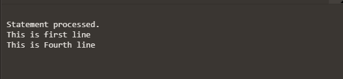
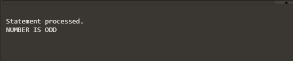

SEQUENTIAL CONTROL
~By default, all PL/SQL blocks are executed in a top-down sequential process. The process begins with a BEGIN statement and terminates with an END statement. So, to change the sequence of execution of statements, you can use following unconditional statements:
(i) GOTO
(ii) NULL
(i) GOTO statement
The PL/SQL GOTO statement is a sequential control structure available in Oracle. The GOTO statement immediately transfers program control, (called "branching") unconditionally to a named statement label or block label. The statement or label name must be unique in the block.
Syntax:-
Example:-
begin
dbms_output.put_line('This is first line');
GOTO FOUR;
dbms_output.put_line('This is Second line');
dbms_output.put_line('This is Third line');
<< Four >>
dbms_output.put_line('This is Fourth line');
end;
Output:-

(ii) NULL statement
Generally when you write a statement in the program, you want it to do something but in some cases you want to tell PL/SQL to do nothing and in such cases, NULL statement can be used. The NULL statement does nothing other than pass control to the next statement.
Syntax:-
Example:-
declare
A number;
begin
A:=5;
if A mod 2!=0 then
dbms_output.put_line('NUMBER IS ODD');
else
NULL;
end if;
end;
Output:-
